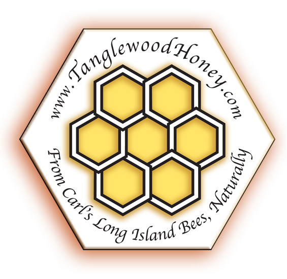

What is honey?
Is all honey the same?
How should I store honey?
Is Crystalized honey bad?
How can I make crystalized honey liquid again?
What is "creamed honey"?
Will the bees be ok if
we take their honey?
Is honey scientifically proven to help a sore throat?
What about eating honey to help with allergies?
What is propolis?
